La persona que podría estar escuchando a la comunidad o generando impacto está perdiendo tiempo.
El financiamiento existe pero llegar a el requiere un sistema que la mayoría de las organizaciones no tiene.
Cuando nos enteramos que abrió una convocatoria, ya cerró o queda una semana.
Cita textual
El seguimiento post-aplicación es un Excel o Word que nadie actualiza.
Cita textual
Toda la documentación legal es mucho trabajo, siempre te pide mil cosas.
Cita textual

Busca, aplica y traza tus fondos generando impacto.
Click para reproducir demo
1 minuto • Buscar, aplicar y rastrear grants